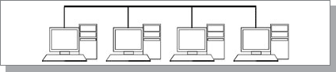

Затем были созданы микропроцессоры и первые микрокомпьютеры. Появилась возможность разместить компьютер на столе у каждого пользователя, так как вычислительные, интеллектуальные ресурсы подешевели. Но зато все остальные ресурсы оставались еще довольно дорогими. А что значит голый интеллект без средств хранения информации и ее документирования? Не будешь же каждый раз после включения питания заново набирать выполняемую программу или хранить ее в маловместительной постоянной памяти. На помощь снова пришли средства связи. Объединив несколько микрокомпьютеров, можно было организовать совместное использование ими компьютерной периферии (магнитных дисков, магнитной ленты, принтеров). При этом вся обработка информации проводилась на месте, но ее результаты передавались на централизованные ресурсы. Здесь опять же совместно использовалось самое дорогое, что есть в системе, но уже совершенно по-новому. Такой режим получил название режима обратного разделения времени (рис. 1.2). Как и в первом случае, средства связи снижали стоимость компьютерной системы в целом.
